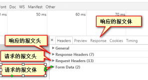

原文连接:https://www.cnblogs.com/rope/p/10696568.html
一、服务器
1.1 什么是服务器，做什么的？
服务器，就是放在机房中的电脑，和我们的电脑的区别在与服务器有固定的IP，服务器的安全性和稳定性相当的高;性能一般就可以了，但是CPU的性能要比普通的客户机高的多。
服务器，就是给计算机网络提供服务的设备。服务器要长时间的运行，所以要求稳定性极强。
服务器的硬件：处理器、硬盘、内存、系统总线等等和我们的电脑一样。但是系统架构是服务器级别的。所有的硬件基础设施都是在处理能力、稳定性、可靠性、安全性、扩展性、管理性能都要求高。
1.2 服务器呢是做什么的？
我们看到的网页上所有的信息内容都来源于服务器。
服务器就是存储网站上所有的数据信息的（数据库、后台的语言、前端的语言、服务器环境）。
我们通过浏览器发送HTTP（超文本协议）请求到服务器。请求的内容（图片、文字、视频、音频等等），服务器再通过响应把数据发送到客户机上。
1.3 服务的信息从何而来？
通过FTP（文件传输协议）工具把本地的数据上传到服务器上的。
在公司怎样管理服务器呢？是运维工程师们（直接操作服务器环境）或产品、运营（后台的图形页面）来管理。
1.4 什么是虚拟主机？
简单来说，就是把一台服务器很具容量的大小，划分给不同的多个用户使用。
目前的互联网上，很多都是几百元的虚拟主机。大多数使用的是低配的服务器，网速很，导致的问题很多。
1.5 服务器的分类
根据服务器的用途分类：
国内的服务器： 一般都是电信和网通的机房。是纯物理服务器。 （需要备案）
云服务器： 一般是多线路机房。采用的是云端的技术，但是费用高。一般用于大型的商业项目
免备案的服务器：一般指的是放置在香港、韩国、美国等海外的服务器。
二、在浏览器地址栏中输入URL，按下回车后究竟发生了什么？
答：当用户在地址栏当中输入网址之后，它会发起上行请求（get、post、delete、checkout、delete...）;当服务器接收到请求之后做出相应的响应；客户端就能看见页面（请求回来的数据）；
|
1、在浏览器中输入网址（域名） 2、浏览器会查找对应的服务器IP地址（去DNS服务器上【域名和IP对应的一个关系型服务器】） 3、浏览器打开TCP连接（默认端口是80），向查过来的IP服务器发送一条HTTP请求，如果浏览器存储了cookie的话，那么cookie也会放入HTTP请求中去。 4、服务器接收HTTP请求 解析请求的文件（后台语言的文件），再生成HTTP响应，将响应发给客户端。 5、浏览器接收到响应的内容，生成页面的框架，进行渲染。请求的页面中若有2级或多级请求（img、css、js）再次的向服务器发送HTTP请求，直到页面所有的信息接收完成。 6、整个过程结束后，浏览器将关闭TCP连接。 |
|
|
在浏览器里输入要网址: |
|
|
浏览器查找域名的IP地址 |

|
浏览器给web服务器发送一个HTTP请求 |
|
|
服务器“处理”请求 |
|
|
服务器发回一个HTTP响应 |
|
|
浏览器开始显示HTML |
|
|
浏览器发送获取嵌入在HTML中的对象 |
|
客户机与服务器断开！ |
最后完成 |
DNS（Domain Name server）：域名服务器，是进行域名和与之对应的IP地址转换的一个关系型服务器。
TCP/IP 协议：是网络层和传输层的协议。（主要是解决数据如何在网络中传输的）
HTTP（HyperText Transfer Protocol）：是超文本协议。（主要是解决数据如何在服务器端和客户机上应用的）。
|
1、红色部分：https超文本传输协议；应用层的一个协议 2、蓝色部分：二级域名的别名 3、黄色部分：域名 4、绿色部分：域名的后缀 5：紫色部分：端口号（port），虚拟短裤、实际端口（USB），虚拟端口一般默认为80，（0~65535） |
三、PHP后端语言
3.1 PHP介绍
所有的后台都要运行在服务器环境上（Java、PHP、node），在不同的服务器环境运行不同的语言。
PHP要运行在Apache服务器环境上，需要安装PHPnow，PHPnow集成包已经包含Apache服务器环境，并且还一起安装了MySQL数据库。
提示：
1、PHP文件的文件夹、文件名都不能是汉字和空格，就要是英文、数字
2、PHP的程序可以嵌套到HTML的任意一个位置。【PHP也称为“狗皮膏药”】
举个例子，在HTML中写PHP语法：
|
<h1>我买了一个iPhone<?php echo 5+3; ?>，花了<?php echo 1000+7000; ?>块钱</h1> |

提示：在本地（没有在服务器上）运行的时候，会发现PHP代码当做了注释。
将文件放在服务器上运行，访问，结果：
通过源代码查看：没有任何的php代码，也就是说，php文件在访问后，被服务端执行了。
提示：
1、PHP代码是在服务器上执行的，将执行完毕的结果返回给客户端
2、HTML、CSS、JS都在本地执行
3.2 PHP基本语法
php壳子：
|
<?php ?> |
所有的PHP语句要在壳子里面写，PHP文件扩展名是.php，壳子可以写在HTML的任意位置
echo输出：在PHP中输出到页面中，echo是关键字，所以没有括号。
|
echo "输出的语句"; |
注意：PHP的每一条语句必须加分号，如果没有分号会严重出错。
echo还可以当函数：
<p>
<?php
echo(1+2+3*5);
?>
</p>页面输出：18
3.3 PHP变量
<p>
<?php
echo(1+2+3*5);
$i = 8888;
?>
</p>
<h1>
<?php
echo $i;
?>
</h1>
壳子没有闭包的性质，所以php所有的壳子其实是一句话。
<?php
$j = 5;
$k = 3;
$str = "abc";
$boo = true;
$num = $j + $k;
echo "结果是：".$num."字符串：".$str."布尔类型：".$boo;
?>PHP中变量命名：以$开头，变量名区分大小写。
PHP中变量不需要定义，可以直接使用。
提示：
|
1、PHP文件可以没有HTML骨架，因为服务器返回的时候已经变为静态页面返回 2、出现乱码使用<meta charset="UTF-8" />标签 3、变量可以进行简单的数学运算（数字与数字） 4、字符串拼接有两种方式 第一种：用“.”进行拼接 第二种：{$变量名称} |
<?php
$year = 2018;
echo "今年是".$year."年";
echo "今年是{$year}年";
?>
在花括号中不能有逻辑运算：
|
echo "a和b的和是：{$a+$b}"; |
解决方案：
<?php
$a = 1;
$b = 2;
//echo "a和b的和是：{$a+$b}";
$sum = $a + $b; //先运算，再输出
echo "a和b的和是：{$sum}";
?>3.4 PHP运算符和条件语句
PHP运算符和JavaScript是一样的
PHP核心语句（for、if...esle...while、switch、do while）和JS一样。
PHP运算符和JavaScript一样的。
PHP的核心语句（for、if……else()、while、switch、do while）和JavaScript一样。
<p>
<?php
for ($i=0; $i < 100; $i++) {
echo "<span>❤</span>";
}
?>
</p>
推荐使用下面的写法：循环语句是分开的。
<?php
for ($i=0; $i < 100; $i++) {
?>
<span>❤</span>
<?php
}
?>3.5 PHP函数
PHP中的函数和JS中一样，但是php中的函数不能new，只能用()执行。
function fun($a,$b){
return $a+$b;
}
echo fun(1,2); PHP的作用域：在PHP当中并没有JS世界当中全局变量。if、for 也不产生作用域。
在函数体内部使用global关键字声明，使用的是全局当中变量。
<?php
$a = 123;
function fn(){
global $a; //声明可以使用全局的$a变量
echo $a; //默认情况下不能用函数外的全局变量
}
fn();
?>
找质数：
<?php
function checkzhishu($num){
$count = 0;
for ($i=1; $i <= $num; $i++) {
if( $num % $i == 0){
$count++ ;
};
};
if($count == 2){
return true;
}else{
return false;
};
};
if( checkzhishu(88)){
echo "是质数";
}else{
echo "不是质数";
}
?>3.6 PHP的数组
概述：PHP中也有数组，数组是一个容器，这个容器可以装任意类型的数据，也有下标，JS中数组的下标是length。
array()函数创建数组。
在 PHP 中，有三种数组类型：
- 索引数组 - 带有数字索引的数组
- 关联数组 - 带有指定键的数组
多维数组 - 包含一个或多个数组的数组
数组方法大全：http://www.w3school.com.cn/php/php_ref_array.asp
数组的声明方式1：
|
1 $arr = array('李达康','黄小明','李云龙','曹操','吕布'); 2 print_r($arr); |
结果：Array ( [0] => 李达康 [1] => 黄小明 [2] => 李云龙 [3] => 曹操 [4] => 吕布 )。
数组的声明方式2，可以指定键值对：
<?php
$arr = array("姓名"=>"李达康","年龄"=>88,"性别"=>"不详");
print_r($arr);
?>Array( [姓名] => 李达康 [年龄] => 88 [性别] => 不详 )
$arr2= array(1,2,3,4,5,6,7,8);
$sum = array_sum($arr2);
echo $sum .'<br />';结果：36
array_unique() 删除数组中的重复值，并返回结果数组：
$arr3 = array(1,2,3,4,5,6,7,8,8,8,9,9,10,11,11);
$arr4 = array_unique($arr3);
print_r($arr4);
数组的声明方式3：数组嵌套数组
<?php
$arr = array("水果"=>array('苹果','香蕉','鸭梨'));
print_r($arr);
?>
提示：
1、PHP中声明数组的方法array()内置方法
2、第一种创建方式，圆括号里面传递元素，如果有多个用逗号隔开，通过枚举索引值从0开始
3、第二种，键值对用=>箭头这种形式，如果要使用数据，需要[key]
方法：
|
echo一般输出的是字符串、变量、数字、布尔值 print_r：也是输出方法，输出的是引用类型（数组） |
四、前后端数据交互方式
4.1两种请求方式
概述：GET和POST是两种上行请求的方式。
需求：写JS代码，用户在浏览器输入年龄和性别，验证是否可婚。
var age = document.getElementById('age');
var sex = document.getElementById('sex');
var btn = document.getElementsByTagName('button')[0];
btn.onclick = function(){
var ageVal = age.value;
var sexVal = sex.value;
if(sexVal == "男" && ageVal >= 22 || sexVal == "女" && ageVal >= 20){
alert('可以领证结婚');
}else{
alert('不可以结婚');
}
}
提示：现在这个判断是否可婚的业务，是在本地浏览器客户端进行处理的。
现在想让服务器给解决出能否可婚，需要将判断的逻辑放到服务器去执行，那么需要向服务器传递一些数据（年龄、性别）。
服务器判断的逻辑和JS一样，但是我们遇到一个问题，用户填写的信息怎么传到后台？
有两种方式：GET和POST上行请求发送HTTP到服务器。
1、GET请求：通过请求的地址后面追加一些参数
|
http://127.0.0.1/01.php?user=20&pwd=男 |
2、POST请求，参数不是通过URL携带的，我们请求的数据时，发送HTTP请求，这个请求里面有报文（包含报文头和报文体），每次请求都会携带报文。我们将数据通过报文体携带到服务器中。
4.2 GET上行请求
通过GET请求伪装URL网址的形式向服务器传递数据，?k=v&k=v形式传递数据。
get请求的信息也就是?后面一堆参数，这堆参数有个术语叫“query string”【查询字符串】
PHP获取GET中的参数：
|
$_GET["key"] |
请求的服务器地址及参数：
|
http://127.0.0.1/04-GET.php?age=23&sex=男 |
服务器的PHP语句获取数据的和处理逻辑：
<meta charset="UTF-8" />
<?php
//获取GET请求的数据
$age = $_GET["age"];
$sex = $_GET["sex"];
if($sex == "男" && $age >= 22 || $sex == "女" && $age >= 20){
echo "可以结婚";
}else{
echo "不可以结婚";
}
?>现在点击前端的页面验证信息，会发送HTTP请求。请求的地址是http://127.0.0.1/04-GET.php。携带的信息是：?age=23&sex=男
提示：http://127.0.0.1/?k = v &k = v(红色部分称之为queryString)。相当于你去淘宝买东西前半部分相当于你家的地址；问号后面的数据是额外信息（相当于客户端给服务器传递的一些额外数据）
如果客户端发起的是GET上行请求，那么服务器端（PHP文件）接受数据也必须是GET方法；
$_GET[“key”]后台工程师管它叫‘超全局变量’。
form 标签的两个属性：
action 是请求的接口地址，通常请求的页面以php、aspx、jsp后缀结尾的文件。
method 是这个表单提交的方式：get和post，小写。
submit 的功能。本质上不是提交。就是帮我们生成一个get请求的地址,访问了你的接口页面。
name值对应是query string 中的k。Value 值对应是query string 中的v。 没有其中任意一个值，php端无法识别。
GET请求的优点和缺点：
优点： get便于分享网址。网络中90%以上请求都是get请求。
缺点： 相对而言不安全（见仁见智），不能提交很多字节。
Http GET方法提交的数据大小长度并没有限制，HTTP协议规范没有对URL长度进行限制。这个限制是特定的浏览器及服务器对它的限制。
IE浏览器对URL的最大限制为2083个字符，超过这个数字，提交按钮没有任何反应。
Firefox浏览器：URL的长度限制为65536个字符。
Safari浏览器：URL最大长度限制为80000个字符。
Opera浏览器：URL最大长度限制为190000个字符。
Chrome浏览器：URL最大长度限制为8182个字符。
Apache服务器：能接受最大url长度为8192个字符。
IIS服务器：能接受最大url的长度为16384个字符。
通过上面的数据可知，为了让所有的用户都能正常浏览， URL最好不要超过IE的最大长度限制(2083个字符），当然，如果URL不直接提供给用户，而是提供给程序调用，这时的长度就只受Web服务器影响了。
理论上讲，POST是没有大小限制的。HTTP协议规范也没有进行大小限制，起限制作用的是服务器的处理程序的处理能力。
GET请求超出最大长度，报错：
4.2.1学习小调查-GET请求
案例：需要有一些调查的数据；学习的情况，留言部分这些是需要用户端提交的数据
将这些数据写入一个文件，保存‘我’服务器这里。
HTML：
<form action="06.php" method="get">
<p>
学习情况：
<label><input type="radio" name="qingkuang" value="一脸懵逼"/>一脸懵逼</label>
<label><input type="radio" name="qingkuang" value="有点懵逼"/>有点懵逼</label>
<label><input type="radio" name="qingkuang" value="还行还行"/>还行还行</label>
<label><input type="radio" name="qingkuang" value="还跟得上"/>还跟得上</label>
<label><input type="radio" name="qingkuang" value="很好很好"/>很好很好</label>
</p>
<p>
晚上回家干什么？
<label><input type="radio" name="huijia" value="玩游戏"/>玩游戏</label>
<label><input type="radio" name="huijia" value="电视剧"/>电视剧</label>
<label><input type="radio" name="huijia" value="发呆"/>发呆</label>
<label><input type="radio" name="huijia" value="学习"/>学习</label>
<label><input type="radio" name="huijia" value="其它"/>其它</label>
</p>
<p>
留言？
<textarea name="liuyan" cols="30" rows="5"></textarea>
</p>
<p><input type="submit" /></p>
</form>PHP：
<?php
$qingkuang = $_GET["qingkuang"];
$huijia = $_GET["huijia"];
$liuyan = $_GET["liuyan"];
$myfile = fopen("result/jieguo.txt","a");①创建文件对象，a代表追加
②写入文件
fwrite($myfile,"情况：".$qingkuang ."---"."回家做：".$huijia."留言：".$liuyan."\r\n");
fclose($myfile); ③关闭文件
echo "提交成功";
?>4.2.1新闻-GET请求
|
http://127.0.0.1/0_9.php?id=2 |
<?php
$array = array(
array("title"=>"标题1","content"=>"内容1"),
array("title"=>"标题2","content"=>"内容2"),
array("title"=>"标题3","content"=>"内容3")
);
?>
<h1><?php echo $arr[0]["title"];?></h1>
<h1><?php echo $arr[$_GET["id"]]["title"];?></h1>
<p><?php echo $arr[$_GET["id"]]["content"];?></p>4.3 POST上行请求
Post请求不多见，POST请求发送信息的时候很复杂。携带的信息将在发送的报文体中。
Post请求一般发送form表单。（保密的数据、大文件【图片、doc文件】、长文本、视频、音频），信息量比较大的内容用post请求。因为post不限制字节数。
概述：GET向服务器传递数据是以伪装URL形式上传数据。但是POST就不一样了，POST用的是报文的报文体上传数据。
报文：报文头+报文体
|
报文头：一般装载的是浏览器的信息 报文体：一般是空的 |
报文：
1、客户端与服务器端传递数据的基本（报文体和报文头），不管是上行请求，还是下行响应都有报文
2、GET、POST请求都有报文，只不过GET伪装URL形式报文体为空，POST请求向服务器传递数据用报文体。
3、客户端发起的是GET服务器端就用GET，客户端发起的是POST服务端就用POST

当你点击submit时候，浏览器会帮你组件报文中的信息，在报文体中插入有关post请求的信息。
4.4 GET和POST的区别
概述：市场上几乎都是GET请求；登录、注册等可以用POST请求
|
GET请求： |
POST请求： |
|
GET请求便于分享 GET请求可被缓存 GET请求保留在浏览器历史记录中 GET请求可被收藏为书签 GET请求不应在处理敏感数据时使用 GET请求有长度限制 GET请求只应当用于取回数据 |
POST请求不便于分享 POST请求不会被缓存 POST请求不会保留在浏览器历史记录中 POST请求不能被收藏为书签 POST请求对数据长度没有要求 |
那，有了这个比较，你应该知道什么时候用get什么时候用post了。
get：一般用于信息获取使用url传递参数，对发送的数据有字节限制，get请求是向服务器获取消息
post：一般用于存储或修改服务器上的资源，post请求都是通过form表单形式提交，post请求可以看成向服务器推送消息
一个完整的URL包括哪些部分：
|
https://mbd.baidu.com/newspage/data/index.php?newsid=12345%pagenum=10#name |
五、HTTP请求和响应
不管是什么文件，只要从服务器过来，就是http请求和响应的这个过程。

HTTP报文详解：http://blog.csdn.net/wzx19840423/article/details/47811559
通用：
Request URL: 请求地址
Request Method:请求方式
Status Code:状态码
5.1 响应的报文头
Cache-Control: 告诉浏览器的如何缓存页面
Connection:keep-alive 保持连接
Content-Encoding:gzip 表示服务器发送压缩的数据格式
Content-Type:text/html;charset=utf-8 内容的格式和编码
Date:Sat, 09 Dec 2017 06:23:56 GMT 服务器的时间
Server:BWS 服务器环境
5.2 响应的报文体
Response Header它代表的是下行响应的报文头
Query String：是GET请求向服务器传递的数据，伪装URL
5.3 请求报文头
Accept:text/html,application/xhtml+xml (告诉服务器浏览器所接收的文本，网页的图片、视频)
Accept-Encoding:gzip, deflate, br （可以接收gzip,deflate压缩后的数据）
Accept-Language:zh-CN,zh;q=0.9 （浏览器支持的语言）
Cache-Control:max-age=0 （浏览器的缓存）
Connection:keep-alive （请求数据后，保持连接）
Cookie: （身份验证信息）
Host:mbd.baidu.com （浏览器要找的主机）
User-Agent: （浏览器内核）
它代表的是上行请求的报文头
5.4 请求的报文体
Form Data：是post请求上行请求的报文体